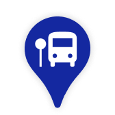
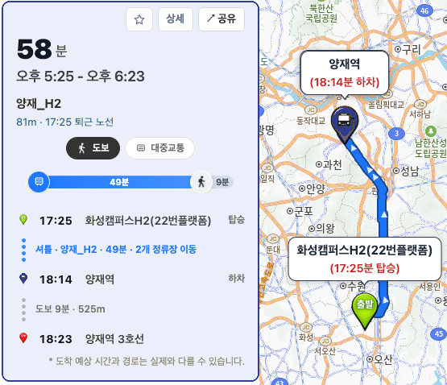
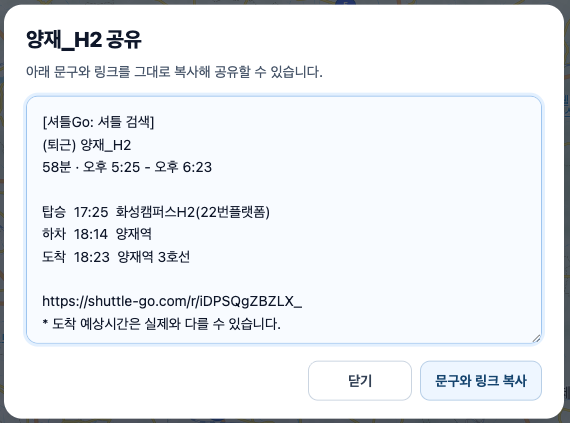

퇴근 후 약속 장소로 이동
"목적지까지 가기 위해 어떤 셔틀을 타야할지 매번 확인하는게 힘들어요."
출근・퇴근・사업장 이동 셔틀 검색
나에게 맞는 셔틀 노선을 손쉽게 찾고 예상 도착 시간까지 한 번에 확인하세요.
오후 6:33 - 오후 7:32
134m · 18:25 퇴근 노선

Problem
"목적지까지 가기 위해 어떤 셔틀을 타야할지 매번 확인하는게 힘들어요."
"제가 사는 곳에서 회사까지 가는 통근 셔틀을 못찾겠어요."
"다른 캠퍼스나 사업장으로 가는 셔틀을 몇 시에 어디서 타야 하는지 헷갈립니다."
"회식 장소나 행사 장소로 가는 셔틀 정보를 부서원들에게 쉽게 공유하고 싶습니다."
Solution
출근길부터 퇴근길, 사업장 이동, 단체 이동까지 상황에 맞는 셔틀을 더 빠르게 검색할 수 있습니다.
삼성전자, 삼성 디스플레이, 삼성 SDI 등 다양한 계열사와 사업장별 셔틀 정보를 한곳에서 확인할 수 있도록 확장합니다.


탑승 정류장, 하차 정류장, 이동 경로, 예상 도착 시간을 지도와 함께 이해하기 쉽게 보여줍니다.

회식, 행사, 사업장 이동에 필요한 셔틀 정보를 팀원에게 쉽게 전달합니다.

Use cases
회사에서 약속 장소 근처로 가는 셔틀을 빠르게 비교합니다.
첫 출근 전 집 근처 정류장과 가장 알맞은 통근 노선을 확인합니다.
캠퍼스, 연구소, 공장 등 사업장 간 이동 셔틀의 탑승 위치와 시간을 찾습니다.
회식, 워크숍, 행사 장소로 이동하는 셔틀 정보를 부서원에게 공유합니다.
Popular routes
주요 사업장의 출근・퇴근 셔틀 노선을 바로 확인해보세요.
FAQ
출근・퇴근 셔틀, 회사 셔틀, 사업장 간 이동 셔틀처럼 회사와 정류장 정보를 기반으로 찾을 수 있는 셔틀 노선을 검색할 수 있습니다.
사용자 제보와 티맵 기준 정보를 바탕으로 정류장별 예상 도착 시간과 전체 경로 예상 시간을 제공합니다. 실제 교통 상황에 따라 결과는 달라질 수 있습니다.
네. 셔틀Go는 데스크톱과 모바일 모두에서 사용할 수 있어 출근 전, 이동 중, 퇴근 직전에도 빠르게 확인할 수 있습니다.
네. 회식, 행사, 사업장 이동처럼 여러 사람이 같은 셔틀을 확인해야 할 때 노선 정보를 공유할 수 있습니다.
ShuttleGo